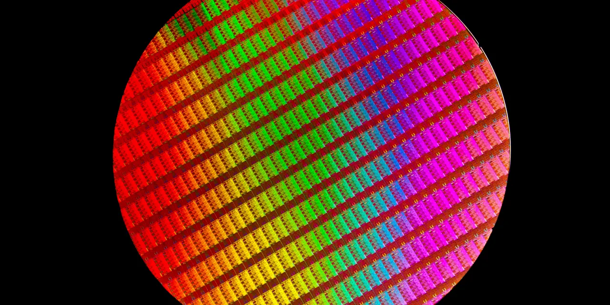

인텔은 이름만 보면 오래된 반도체 강자입니다. 그래서 많은 투자자가 “예전처럼 다시 좋아질 수 있을까”를 먼저 묻습니다. 그런데 앞으로 10년을 보려면 질문을 조금 바꿔야 합니다. 인텔이 다시 CPU를 잘 파는 회사가 될 수 있느냐보다, 돈을 버는 제품 사업과 돈이 많이 드는 공장 사업을 동시에 견딜 수 있느냐가 더 중요합니다.
중학생도 이해할 수 있게 비유하면 이렇습니다. 인텔은 맛있는 빵을 만들어 파는 빵집이면서, 다른 빵집의 빵까지 구워 주겠다고 새 공장을 크게 짓는 회사입니다. 빵집은 아직 돈을 벌 수 있습니다. 문제는 새 공장이 너무 비싸고, 공장이 돈을 벌기까지 시간이 오래 걸린다는 점입니다. 주가는 “빵이 맛있다”는 말만으로 10년 동안 오르지 않습니다. 새 공장의 손실이 줄고, 다른 손님이 그 공장을 믿고 맡기는 순간부터 이야기가 달라집니다.
따라서 인텔의 10년 전망은 낙관과 비관이 모두 가능합니다. 낙관 쪽은 미국 안에 첨단 반도체 제조 능력이 꼭 필요하고, 인텔이 그 역할을 맡을 수 있다는 주장입니다. 비관 쪽은 공장 전환이 늦어지는 동안 AMD, TSMC, 엔비디아, 브로드컴 같은 경쟁사가 시장의 돈과 관심을 계속 가져간다는 주장입니다. 이 글은 어느 한쪽을 외치는 글이 아니라, 주가 전망을 가르는 숫자를 차례대로 보는 글입니다.
인텔은 칩 가게이면서 공장 주인입니다

인텔의 사업은 크게 두 덩어리로 나눠야 이해하기 쉽습니다. 첫 번째는 Intel Products입니다. PC와 서버에 들어가는 CPU 같은 제품을 설계하고 파는 사업입니다. 두 번째는 Intel Foundry입니다. 반도체 공정을 개발하고 공장을 돌리며, 인텔 내부 제품뿐 아니라 외부 고객의 칩도 만들어 주겠다는 사업입니다.
인텔 2025년 실적 발표 기준으로 Products는 2025년에 약 491억 달러 매출과 127억 달러 수준의 영업이익을 냈습니다. 반대로 Foundry는 약 178억 달러 매출을 냈지만 영업손실이 103억 달러였습니다. 쉽게 말하면, 한쪽 가게가 돈을 벌어도 새 공장이 워낙 큰 적자를 내면 가족 전체 통장에는 돈이 덜 남는 구조입니다.
2026년 1분기도 같은 그림입니다. 인텔 Q1 2026 실적에서 전체 매출은 136억 달러로 전년 대비 7% 증가했습니다. Products 매출은 128억 달러, Foundry 매출은 54억 달러였습니다. 겉으로 보면 매출은 괜찮아 보입니다. 하지만 영업활동 현금흐름은 11억 달러였고, 조정 잉여현금흐름은 -20억 달러였습니다. 벌기는 벌었지만 공장과 설비에 들어가는 돈까지 빼면 아직 주주에게 넉넉히 남는 현금은 부족하다는 뜻입니다.
그래서 인텔 주가를 볼 때 “매출이 늘었다” 한 문장으로 끝내면 위험합니다. 더 중요한 것은 어느 사업에서 돈을 벌었고, 어느 사업에서 돈이 새고 있으며, 그 차이가 줄어드는지입니다. 10년 뒤 인텔이 좋은 주식으로 기억되려면 Products가 꾸준히 버는 동안 Foundry 손실이 눈에 띄게 줄어야 합니다.
앞으로 3년은 새 공장이 시험을 받는 시간입니다
관련 영상
적자 탈출로는 부족한 인텔 턴어라운드 조건 분석
인텔 10년 전망에서 가장 중요한 단어는 18A입니다. 어려운 말처럼 들리지만 뜻은 단순합니다. 인텔이 “우리의 새 공정으로 좋은 칩을 만들 수 있다”고 증명해야 하는 시험 이름입니다. 인텔 뉴스룸은 Panther Lake를 Intel 18A 기반 첫 클라이언트 시스템온칩으로 소개했고, Clearwater Forest를 18A 기반 서버 프로세서로 안내했습니다.
그러나 새 공정이 발표됐다는 것과 새 공정이 돈을 번다는 것은 다릅니다. 새 오븐을 샀다고 바로 빵집 이익이 늘지 않는 것과 같습니다. 처음에는 불 조절을 맞추고, 재료 낭비를 줄이고, 손님에게 품질을 인정받아야 합니다. 반도체에서는 이것을 수율, 원가, 고객 인증이라고 부릅니다. 수율은 만든 칩 중 제대로 작동하는 칩의 비율입니다. 수율이 낮으면 좋은 기술도 돈을 잡아먹는 기술이 됩니다.
특히 Foundry 사업은 외부 고객이 중요합니다. 인텔이 자기 제품을 자기 공장에서 만드는 것은 필요하지만, 시장이 Foundry에 높은 가치를 주려면 다른 회사도 인텔 공장에 칩 생산을 맡겨야 합니다. 2025년 Form 10-K 기준 Foundry의 외부 매출은 3억700만 달러였습니다. 전체 Foundry 매출과 비교하면 아직 매우 작습니다. 이 숫자가 앞으로 의미 있게 커지는지가 10년 전망의 첫 번째 갈림길입니다.
앞으로 3년은 인텔의 “시험 기간”에 가깝습니다. Panther Lake가 실제 제품 경쟁력을 보여야 하고, Clearwater Forest가 서버 시장에서 고객을 설득해야 하며, 18A 공정이 높은 수율과 충분한 물량을 보여야 합니다. 이 셋 중 하나만 좋아져도 주가는 반응할 수 있지만, 10년짜리 재평가가 되려면 세 가지가 같은 방향으로 움직여야 합니다.
10년 주가를 가르는 숫자는 네 가지입니다
첫 번째 숫자는 Products 영업이익입니다. 인텔의 기존 제품 사업이 계속 돈을 벌어야 새 공장 전환을 견딜 수 있습니다. PC 시장이 회복되고 서버 CPU 수요가 버텨도, AMD와 클라우드 자체 칩 경쟁 때문에 가격이 눌리면 이익은 생각보다 약할 수 있습니다. 매출보다 영업이익률을 봐야 하는 이유입니다.
두 번째 숫자는 Foundry 영업손실입니다. 적자가 크더라도 매년 줄어든다면 시장은 기다릴 수 있습니다. 하지만 매출이 늘어도 적자가 줄지 않으면 이야기가 달라집니다. 공장 가동률이 낮거나 수율이 부족하거나 고객 인증이 늦으면 매출 성장보다 비용 증가가 더 먼저 보일 수 있습니다.
세 번째 숫자는 조정 잉여현금흐름입니다. 중학생식으로 말하면 “진짜로 남은 돈”에 가깝습니다. 회계상 이익이 좋아 보여도 설비투자에 돈이 많이 들어가면 주주에게 남는 현금은 작아집니다. 인텔은 큰 공장을 가진 회사라 이 숫자가 특히 중요합니다. 10년 주가가 좋아지려면 단순히 적자 폭이 줄어드는 정도가 아니라, 남는 현금이 반복적으로 플러스로 바뀌어야 합니다.
네 번째 숫자는 외부 파운드리 고객입니다. 고객 이름이 모두 공개되지 않더라도, 외부 고객 매출, 선급금, 장기 계약, 첨단 패키징 주문, 고객 인증 단계가 구체적으로 보이면 신뢰가 커집니다. 반대로 외부 고객이 계속 작고 내부 제품 비중만 크다면, 인텔은 파운드리 회사라기보다 비싼 내부 제조망을 가진 CPU 회사로 평가받을 수 있습니다.
좋아지는 길과 계속 싼 주식으로 남는 길
긍정 시나리오는 선명합니다. Products가 PC와 서버에서 안정적인 이익을 내고, 18A가 Panther Lake와 Clearwater Forest에서 좋은 수율을 보여주며, Foundry 손실이 해마다 줄어듭니다. 여기에 미국과 유럽의 반도체 공급망 정책이 인텔의 공장 가치를 높여 주고, 외부 고객이 인텔 공정을 실제로 선택하면 인텔은 단순한 과거 강자가 아니라 미국 첨단 제조의 핵심 선택지로 다시 평가받을 수 있습니다.
중립 시나리오는 더 현실적일 수 있습니다. 인텔은 망하지 않고 중요한 회사로 남지만, 주가는 오래 답답할 수 있습니다. Products는 버티지만 AMD와 맞춤형 칩 경쟁 때문에 성장률이 크지 않고, Foundry는 좋아지지만 손실 축소 속도가 느립니다. 이 경우 인텔은 “싸 보이는 대형주”로 남을 수 있습니다. 싸 보인다는 말은 언제나 좋은 말이 아닙니다. 시장이 기다리는 시간이 길면 싼 가격도 오래 싼 가격으로 남을 수 있습니다.
부정 시나리오는 공장 전환이 늦어지는 경우입니다. 18A 수율이 기대보다 느리거나, 외부 고객 확보가 부족하거나, 설비투자 부담이 계속 크면 Products가 버는 돈이 Foundry 적자와 투자 비용을 계속 메우게 됩니다. 이때 주가는 “미국 정부가 필요로 하는 회사”라는 기대보다 “주주에게 남는 현금이 부족한 회사”라는 현실에 더 민감해질 수 있습니다.
주가 전망을 기간별로 나누면 더 쉽습니다. 1~2년은 실적 변동성과 공정 검증의 시간입니다. 3~5년은 Foundry 손실 축소와 외부 고객 확대가 숫자로 보이는지 확인하는 시간입니다. 6~10년은 인텔이 진짜로 제품 회사와 제조 플랫폼을 함께 가진 회사로 재평가받을 수 있는지 판가름나는 시간입니다. 단기 급등보다 이 시간표가 더 중요합니다.
결론: 인텔은 상상보다 확인 순서가 중요합니다
인텔은 쉽게 무시할 회사가 아닙니다. CPU, 제조, 패키징, 정부 공급망, 데이터센터 고객이라는 큰 자산을 가지고 있습니다. 하지만 좋은 자산이 곧 좋은 주가를 보장하지는 않습니다. 주가는 결국 기대와 숫자의 싸움입니다. 기대가 너무 앞서가면 좋은 뉴스에도 주가가 덜 오르고, 숫자가 조용히 좋아지면 시장은 늦게라도 다시 가격을 붙입니다.
제가 보는 인텔의 10년 핵심 문장은 이렇습니다. “제품 사업이 벌어 주는 돈으로 파운드리 전환의 시간을 버티고, 그 파운드리가 외부 고객 매출과 현금흐름으로 증명될 때 주가의 긴 이야기에도 힘이 생깁니다.” 이 문장이 어렵다면 더 짧게 줄일 수 있습니다. 새 공장이 언젠가 좋아진다는 말보다, 새 공장이 매년 덜 손해 보고 결국 돈을 벌기 시작하는지가 중요합니다.
투자자가 다음 실적에서 볼 표는 복잡할 필요가 없습니다. Products 매출과 영업이익, Foundry 매출과 영업손실, 영업현금흐름, 조정 잉여현금흐름, 외부 Foundry 고객 신호를 한 줄씩 적으면 됩니다. 이 다섯 줄이 같은 방향으로 좋아지면 인텔의 10년 전망은 훨씬 밝아집니다. 반대로 이 표가 엇갈리면 주가는 계속 “기대는 크지만 확인은 부족한 주식”으로 남을 가능성이 큽니다.
이 글은 특정 가격대의 매수나 매도를 권하는 글이 아닙니다. 인텔을 보유했거나 관심 있게 보는 독자라면 목표가보다 먼저 위의 다섯 줄 표를 직접 업데이트해 보시는 편이 좋습니다. 인텔은 이야기가 큰 회사입니다. 하지만 앞으로 10년 동안 주주에게 필요한 것은 큰 이야기보다, 그 이야기가 현금으로 바뀌는 속도입니다.